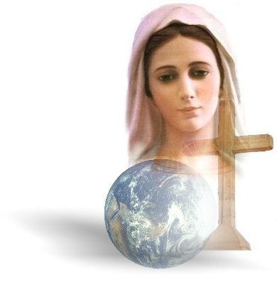
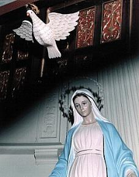
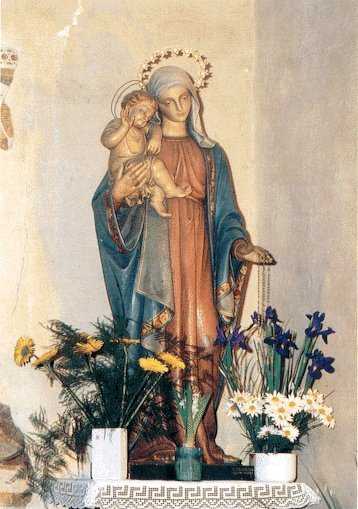
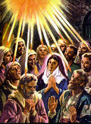
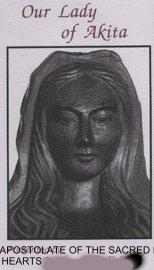
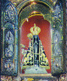
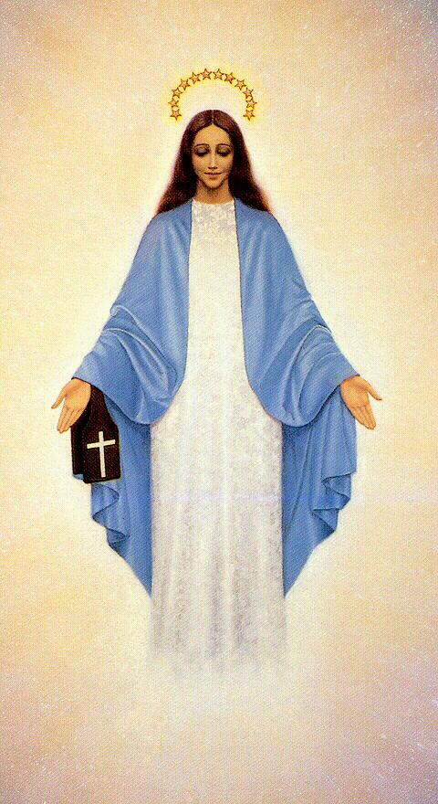

Mary of Nazareth was the first who received a manifestation in fullness of
the HOLY SPIRIT, when in the Day of the Annunciation, she became the sacred and
inviolable ciborium, sheltering in her womb for nine months the SON OF GOD. And
everything happened of a surprising and wonderful way, in the small village of
Nazareth in Galilees mountains, there is two thousand years past.
Mary of Nazareth was the first who received a manifestation in fullness of
the HOLY SPIRIT, when in the Day of the Annunciation, she became the sacred and
inviolable ciborium, sheltering in her womb for nine months the SON OF GOD. And
everything happened of a surprising and wonderful way, in the small village of
Nazareth in Galilees mountains, there is two thousand years past.
Having finished the habitual occupations in
the house and while she rested at the room 
she thought in the engagement with
Joseph, in the inspired words of the Sacred Writing and she exulted with the
CREATOR'S incommensurable mercy, always aiding and protecting the people
to find the road of the right, of the justice and of the fraternal love. She felt who in
her heart grew an unrestricted and uncontrollable love to GOD, which it was so large
that she decided if to consecrate entirely to HIM: her works, her thoughts, her
personal wish and her own life.
And like this, while she was thinking in pretty
dreams, it appeared of sudden an Angel and she trembled, how if she had a shock...
With the fright of the unexpected, she stayed of foot and very perplexed with the visit,
looked him askance and in silence. Angel smiling has greeted Mary:
Hail, full of grace.
The LORD is with you. Blessed are you among women!
(Luke 1, 28)
Hearing the greeting she stayed admired
and naturally she has thought: but what is this, my GOD?
Without that she knew, the CREATOR
granted him many special prerogatives: she was preserved of the stain of the original
sin and she was full of graces. The HOLY SPIRIT always occupied an immense
dimension in your heart, by merit of to have been chosen MOTHER OF GODáS SON.
However, same without knowing the privileges that the CREATOR spilled in her
spirit and although apprehensive with that visit, she stayed with your natural
modesty and simplicity, answering timidly the greeting of the Angel with
a respectful inclination of head, but in silence and looking at him. With a kind
smile, the Angel tried to tranquilize her saying that was the Archangel
Gabriel and was executing the orders of the Heaven:

And the Angel said
to her: Do not be afraid, Mary, for
you has found grace with GOD. Behold, you shall conceive in your womb, and you
shall bear a son, and you shall call his name: JESUS. HE will be great, and HE
will be called the SON of the Most High, and the LORD GOD will give him the
throne of David his father. And HE will reign in the house of Jacob for
eternity. And HIS kingdom shall have no endá.
(Luke 1, 30-33)
Mary has felt an immense emotion;
GOD was corresponding at the deep and burning love, which dedicated with all force
of her soul to HIM, with the most sublime impulse of the heart and with the largest
intensity of her life. By this, visibly disturbed with that extraordinary manifestation
in an effort to control the ardor of the feelings she remembered the vote
of perpetual chastity that intimately did at the 12 years of age, then lowly asked:
How this shall
be done, since I do not know man?
(Luke 1, 34)
The Archangel Gabriel assuming a deeply
convinced attitude has answered at Mary:
The HOLY SPIRIT will
pass over you and the power of the Most High will overshadow you. And because of
this also, the Holy One who will be born of you shall be called the SON OF GOD.
(Luke 1, 35)
Although full of great pleasure with that wonderful
experience of the Divine Love, but with her natural simplicity and in silence,
continued hearing the words of the Archangel's of GOD:
And behold, your
cousin Elizabeth has herself also conceived a son, in her old age. And this is
the sixth month for her who is called barren.
(Luke 1, 36) 
At this time, Mary's pretty eyes must
have shone much more demonstrating a deep happiness, because she had
immense friendship by cousin and she knew the how much Elizabeth was wishing
a son. And the Angel continued reasoning, showing reasons to Mary, saying that
her chastity vote went accept by The LORD and that she would be protected,
because would have a miraculous conception and completing, he affirmed:
For no word will be
impossible with GOD. (Luke 1, 37)
There has been an absolute silence...
The nature stopped and the birds didn't sing more, it was not heard any noise,
the expectation it was general...
For Mary, however, in her habitual simplicity and
authenticates humility it was a necessary pause to recover the breath of her sense, so
excited by the CREATOR'S infinite kindness. And then came the
"Yes"; the
Yesó so expected; the
"Yes" that brought us
JESUS, our Savior and Redeemer; the
"Yes" who has given us in fullness the Divine mercy,
because it neutralized the intensity of the
"yes of Eva"; the "yes" of the first woman at the Angel
of the Darkness, that originated the Sin and the Death.
The HOLY SPIRIT that it was residing in
Mary's heart and had configured her virtuous charismas, conform the Divine model,
HE blew on her soul and then, she said:

Behold, I am the handmaid
of the LORD. Let it be done to me according to your word.
(Luke 1, 38)
Beginning from that instant, GOD completed
the decree of the Annunciation. The Archangel Gabriel said good-bye, but Mary not stayed
alone; it began the holy pregnancy of OUR LADY'S.
This experience of the HOLY SPIRIT completed
the gifts in her soul, and we can to say that our BLESSED MOTHER reached in that
sublime moment, the splendor apex of Divine Grace. And like this, behaving with simplicity
and emotional balance precious, she demonstrated in your existence the beauty and the larger
purity of your feelings, personifying with fidelity the SPIRIT OF GOD; living the SPIRIT
Life intensely.
ACTION OF
THE CHARISMAS IN MARY
Mary of Nazareth exercised in profusion
the charismas that flooded your soul. Although, in the Sacred Writing, we found little
mentions about Mary and her activities, those that exist, they contain a limitless wealth,
because they emphasize in an evident and notable way her virtues that emerge of each
event, revealing the exceptional qualities and the performance wonderful, in the
atmosphere of her time.
When they have returned from the exile
in the Egypt, they have gone for a small home in 
Nazareth of Galilee, where Mary,
Joseph and the BOY JESUS have fixed residence. And there, they could cultivate the
simplest and pure love, replete of harmony and of a prodigious peace. Taking care of the
domestic services and in the synagogue, where reading the sacred books, she was illuminated
by the SPIRIT and always she believed in the presence of GOD in the SON who HE trusted
at her. Her Faith was authentic and she showed permanent adhesion at the LORD. IN HIM
she placed her integral confidence and all hope, because above all HE was the immense
sun that flooded and it illuminated her existence. And we know by the epistles of Saint Paul,
that the Faith is a Gift of the SPIRIT (1 Corinthians 12, 3). So, it was the "Faith" that Mary
revealed along all her life.
In agreement with the Jewish Law, the full legal age,
that is to say, the age in that the individual enter in the possession of its civil rights, it begins
for the Israeli to the 12 years of age. He becomes son of Torah, that is, son of the Law, the Jewish
community's member and has the obligation to participate, at least, of the three main
solemnities that every year is accomplished in the Temple in Jerusalem.
The celebration of the 12 years or of the Passover
of JESUS, was in a time of political moving and that, there was a fear atmosphere and
apprehensions that it has involved all the people.
Finished the solemnity as habitually it happened;
the families returned its homes. However, JESUS stayed in Jerusalem without anybody
to perceive.

Joseph and Mary thinking that HE was
in the caravan, with others friends, they have followed the travel. But in the evening
of the first day, when the caravan stopped in place previously certain so that each family
to erect its hut to pass the night and to rest, JESUS not appearing, they stayed worried.
With much affliction they have searched in the several groups of families that composed
the caravan. But nobody it knew about HIM. Then, after a bad night without sleep,
they returned to Jerusalem. On the morning of the third day they found HIM in the
Temple among the Doctors of the Law.(Luke 2, 41-50)
This passage reveals others wonderful charismas
that the ESPIRIT placed in Mary's heart: Charity, Patience, Longanimity (generosity),
Self-control, Softness and Meekness, which She exercised in fullness, in spite of the
moments of anguish and affliction that she had to suffer in your life.
Another important citation is found in the
Book of Saint John the Evangelist, where he speaks about a Wedding in Cane of Galilee
(John 2, 1-12), a Marriage among known of JESUS, whose ceremony, for right, happened
in the molds of the Jewish habits, in that the commemoration lasted one week and
it was constituted in a pleasant occurrence, of commemoration and friendship.
JESUS, OUR LADY and the Apostles were invited and they were present.
MARY saw that the wine was ending
and she informed to JESUS. But the LORD reminded that HIS hour to act not had
still arrived. However, with trust, MARY said at the servants:
Do whatever HE tells you.
(John 2, 5)
They there were six stone vases that the Jews
used for the purification of the hands and feet. JESUS ordered that they filled them with
water. After transforming the water in a delicious red wine HE ordered they took them
at the master of Ceremony. That man, when received the vases full with a special wine
he stayed admired and said at the newlyweds:
Every man offers the
good wine first, and then, when they have become inebriated, he offers what is
worse. But you have kept the good wine until now.
(John 2, 10)
The fianc stayed embarrassed, because
he didn't know what to say and nor he knew the origin of that wine, but the servants
was knowing and they shut up, by order of JESUS.
In this passage, also of notable way and
spontaneous, Mary exercised her
charismas, evidencing, above all,
the gift of Kindliness, the immense dimension of her Kindness that is sister of the
Love and companion of the Faith. She had knowledge the SON'S HEART and she knew
the greatness of HIS mercy, for that, it ordered at the servants: " Make everything that HE saidá
. That order to the servants reveals the incommensurable
dimension of Mary's conviction, well-founded in the Kindness of the JESUSó HEART.
Her faith was authentic and her limitless trust because it was based in the Power
and in the Love of GOD. Then, that fact was more a natural manifestation of the
charismas that was residing in her heart.
Also when she was at the side of the Cross
of JESUS, before the LORD to die, HE looking to Mary has given you the mission
of being all humanity's Spiritual Mother, to help us along the existence, interceding
near of HIM in our benefit. Because JESUS is the Mediator Supreme before the
ETERNAL FATHER, and so, in order to reach all graces for everybody those begged
her ineffable and such valuable protection.
And as last citation, in the Cenacle in Jerusalem,
on the day marked by the LORD, the HOLY SPIRIT spilled graces in fullness on the
Apostles and MARY. Although possessing already the HOLY GHOST, she received
the Divine stimulus of the charismas in order to execute the mission in the company of
Disciples, of to implant and to impel the Church that was being born.
These events and many others that the Sacred
Bible describes, they testify that the HOLY SPIRIT in MARY inhabited and flooded you
with a torrential source of gifts that they were manifested always by her, through
her kindness and by affections, that she reveals to all the people that sincerely invoked
her powerful and maternal aid.

Next Page

 Previous Page
Previous Page
Comes Back to the Index